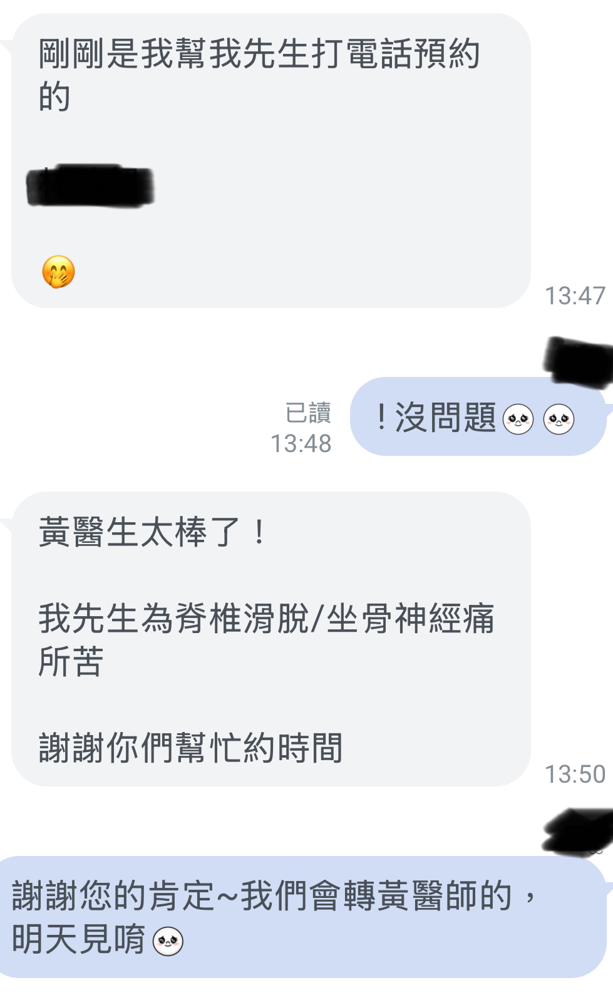

結構與功能：當訓練也遇到瓶頸，解鎖骨盆力學的關鍵拼圖
結構與功能：當訓練也遇到瓶頸，解鎖骨盆力學的關鍵拼圖
最近診所的初診量顯著增加，多數都是已畢業康復、或症狀明顯改善的老戰友們介紹來的親友，也有不少是在社群網路上關注許久，特地前來的求診者。實在非常感謝這份信任，讓我有機會幫助更多人。
今天診間來了一位很特別的年輕女士。起初是左 #足底筋膜炎 ，後來演變成左 #膝內側疼痛 ，不僅如此，她也長期受右側 #肩頸痠痛 與顳側 #頭痛 所苦，更覺得右肩前鋸肌始終無法正常發力。
這些症狀困擾了她好一陣子。期間她嘗試過各式各樣的治療：物理治療、結構調整、復健拉伸、增生注射，甚至強化運動訓練，但效果總是不盡人意，症狀總是反覆發作。為了找出病因，她主動上網鑽研，最近發現從「 #筋膜結構 」的角度切入似乎有轉機，於是決定尋求這方面的專業協助，希望能修復症狀，並長期保養身體這台精密的車。
在透過脈診後，發現雙手脈象三部皆弱，邊界模糊不清楚，合併參酌年紀、職業與其他生活細節，不可能是手無縛雞之力的虛弱體質，而且雙脈中沉取也是一遍“抑制性”脈象。
正當我準備解釋筋膜脈象與下肢生物力學與這一連串症狀的關聯時，才發現她竟然是一位資深重訓教練兼瑜伽老師，擁有八年豐富資歷，對這些力學連動關係早已瞭然於胸。
「道理我都懂，但我的臀肌就是練不起來，總覺得無法正確發力。」她無奈地說，「還有，我右側肩胛骨一直卡在前面，前鋸肌怎麼用力都推不出去，跟左邊比起來就是覺得怪怪的。」
遇到這類具備極高身體素質與專業知識的教練，我們的對話直接進入核心：人體結構跨關節的聯動關係，以及 #骨盆中軸 的穩定重要性。
其實，對於像她這樣的專業人士，「練不起來」往往不是肌肉萎縮或缺乏訓練，而是『骨盆結構偏移導致的神經肌肉抑制（Arthrogenic Muscle Inhibition）』。
#骨盆 不僅是承載脊椎的地基，更是上下半身力量傳遞的「中樞轉運站」。
當左側足踝與膝蓋因排列不正失去支撐時，骨盆為了維持平衡，會產生代償性的旋轉或傾斜。
這種結構上的微小錯位，直接改變了臀肌的力學力臂，導致肌肉處於「力學上的劣勢位置」。
簡單來說，就像車子的底盤歪了，輪胎再好、引擎再強，動力也無法順暢輸出，甚至造成零件不正常的磨損。
更關鍵的是人體的「對側連動機制」。
由於左下肢根基不穩，力量無法有效通過骨盆傳遞，身體被迫徵召對側（右側）的上半身來代償平衡。
這就是為什麼她的右肩胛長期卡在前方、前鋸肌無法發力的主因——那是身體為了拉住不穩定的左側骨盆，所做出的不得已的「代償緊繃」。
如果不先把骨盆這個樞紐歸位，單純訓練右肩或放鬆左腳，都只是在處理受害者，而非元兇。
在達成治療共識後，我們進行了針對性的結構 #徒手治療 。重點不在於放鬆那些緊繃的肌肉，而是精準地釋放卡住的骨盆、薦髂關節與腰薦椎，恢復身體該有的「 #回正能力 」，並重建骨盆到肩膀、以及骨盆到左足弓的正確力學連線。
此外，為了強化穩定性，我也針對無力的下背部——特別是中下斜方肌進行 #乾針 修復。這能有效喚醒下背肌群的功能，讓肩胛骨找回穩定的依託，自然回到正確的位置。
治療結束當下，脈象獲得立即性的改善，她站起來嘗試各種活動時，眼神充滿了驚喜。
除了骨盆區域久違的釋放與輕鬆感，原本「失聯」的側向鏈右肩區域，現在能與左肩一樣清晰地發力。更讓她驚訝的是胸廓活動度的改變——她終於感覺到隨著呼吸律動，能夠真正「 #吸得到氣 」了。
這就是 #骨盆校正 迷人之處。當我們將核心樞紐調整回正確軌道，原本被抑制的肌肉就能瞬間找回神經連結，長期困擾的遠端疼痛也能迎刃而解。
對於專業教練而言，擁有排列正確的身體結構，不僅是為了治痛，更是為了讓每一次訓練都精準到位，讓身體這台精密超跑發揮出應有的極致性能。
#徒手傷科治療 #結構生物力學 #骨盆歪斜 #肌筋膜脈象 #代償機制 #重訓 #瑜伽 #乾針 #身體覺察
太初中醫診所 東門中醫
中醫師 黃彥鈞
